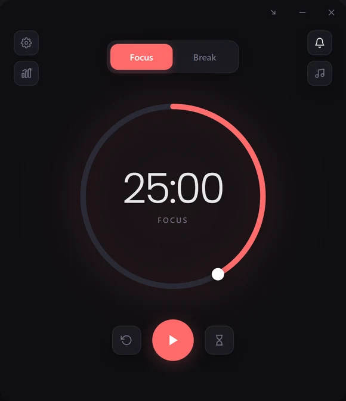
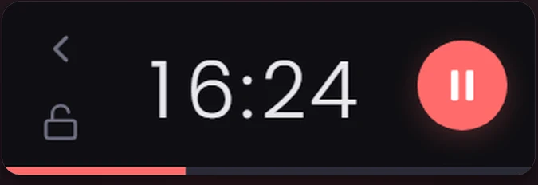
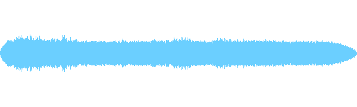
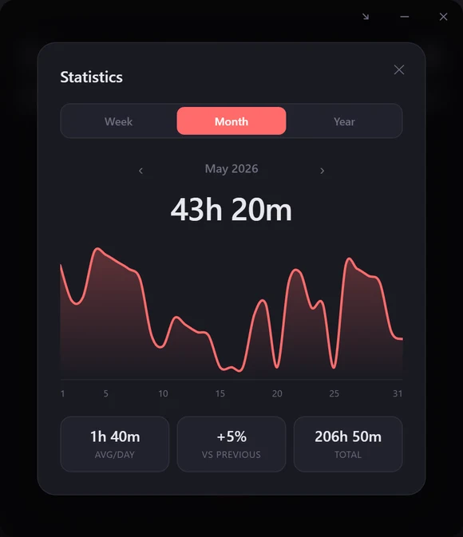

Set your pace.
Choose your focus and break lengths. Give each phase its own colour, in a light or dark window.

A focus timer that stays beside your work.
Set a study session, turn on a background sound and keep the countdown in sight with Mini Mode.
Get it from Microsoft Store ↗Free for Windows 10 and 11 · 64-bit
Choose your focus and break lengths. Give each phase its own colour, in a light or dark window.

Choose from nine background sounds and adjust the alarm volume separately. Try a short sample from the app.

Review your week, month or year. Statistics stay on your PC, with optional Google sign-in to sync across devices.

A session begins in the full timer. After adjusting colour and audio, the timer shrinks over a calculus worksheet. A chime signals a break, followed by a view of focus statistics.
Cloud notification sound by akx, used under CC BY 3.0. Volume adjusted and mixed with original music.